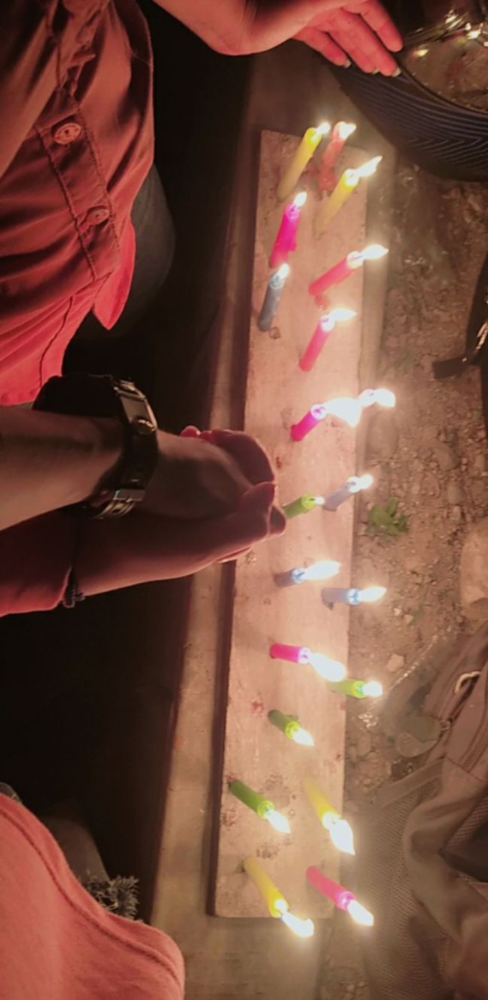
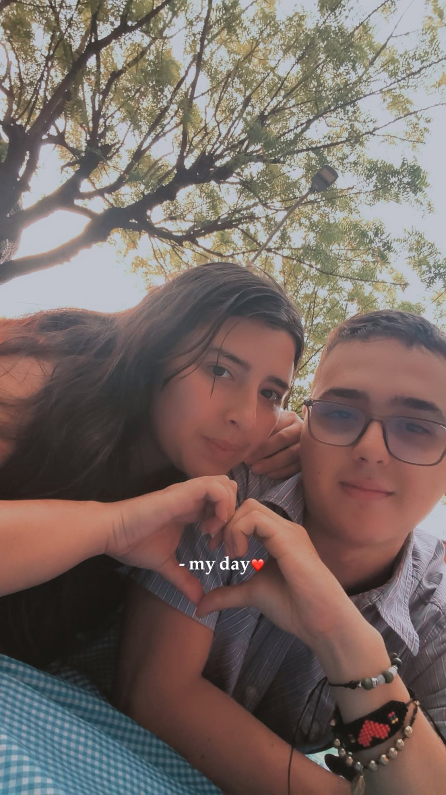

Hay momentos que el tiempo nunca podra borrar, porque quedaron grabados en el corazon.


30 de abril de 2021 28 de marzo de 2026
Este fue el tiempo que compartimos... Un tiempo lleno de recuerdos, sonrisas, aprendizajes y momentos que siempre llevar conmigo.
Porque el futuro aún tiene páginas en blanco...
y mi deseo es seguir escribiéndolas contigo.